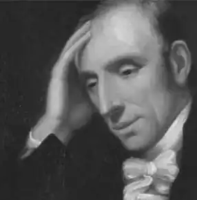

ВОРДСВОРТ, Вільям (Wordsworth, William — 07.04.1770, Кокермаут — 23.04.1850, Рідл-Маунт) — англійський поет.Водсворт народився у невеликому містечку, розташованому у графстві Кемберленд. Батько Водсворта був юристом. Після закінчення Хокшидської драматичної школи вступив у Кембридж. В університеті відразу ж привернув увагу викладачів видатними здібностями у царині науки. Після першої екзаменаційної сесії він очолив список найкращих студентів. Особливо значними були успіхи Водсворта у математиці. Але перспектива цілковито віддатися академічній науці, очевидно, не приваблювала його. Незабаром увесь свій вільний час він почав віддавати вивченню літератури на шкоду іншим предметам.
У 1790 р. Водсворт вирішив здійснити подорож Європою. Особливо тривалим було його перебування у Франції. Ідеї Французької революції справили на нього у цей період значний вплив. Тут, у Франції, він познайомився з Аннетою Валлон, дочкою хірурга із Блуа, в яку він закохався і яка народила йому дочку. Про народження дочки В. дізнався, вже перебуваючи в Англії. У 1793 р. опублікував два вірші "Вечірня прогулянка" ("An Evening Walk") і "Описові замальовки" ("Descriptive Sketches"), де спробував висловити свої враження від мандрівки. У цьому ж році Водсворт написав "Лист єпископу Ландаффу" на захист Французької революції, який так і залишився неопублікованим за життя поета. У 1795 р. Водсворт отримав невелику спадщину після смерті одного зі своїх приятелів. Ці гроші дозволили йому цілковито віддатися літературній творчості. Разом із сестрою Дороті, відданим другом і помічником поета впродовж усього його життя, він замешкав у Рейсдауні. У цьому самому році Водсворт познайомився з С. Т. Колріджем і незабаром перебрався жити в Олфоксден, щоб бути ближче до нового товариша. Результатом дружби двох поетів стала поява збірки "Ліричні балади" ("Lyrical Ballads", перше видання якої з'явилося у 1798 р. у Брістолі, а друге, значно доповнене, — у 1800 р.)
Про виникнення задуму книжки пізніше розповів Колдрідж у "Літературній біографії" (1817): "Першого року, коли ми стали сусідами з містером Вордсвортом, розмови наші часто торкалися двох кардинальних пунктів поезії, її здатності будити співчуття читача шляхом відповідності правді життя і здатності робити її цікавою мінливими фарбами уяви... Ця ідея і народила план "Ліричних балад", у яких, як було домовлено, я повинен був спрямувати свої зусилля на образи та характери надприродні чи, хоча б, романтичні... Містер Вордсворт, зі свого боку, поставив за мету надати чару новизни повсякденному та пробудити почуття, аналогічні сприйняттю надприродного, пробуджуючи свідомість від летаргії буденності та спрямовуючи її на сприйняття краси та дивовиж світу...". За первісним задумом, обидва поети повинні були написати для збірки приблизно однакову кількість віршів, але трапилося так, що вона була укладена в основному з творів Водсворта. "Ліричні балади" стали важливою віхою у розвитку англійської літератури, часто історики літератури саме із цього твору починають відлік романтичного періоду в англійській культурі. І Водсворт, і Колрідж добре усвідомлювали новаторський характер цієї книги, з цим якоюсь мірою пов'язувалася та обставина, що "Ліричні балади" були видані анонімно. Автори не хотіли, щоб вірші з нової збірки якимось чином асоціювалися у свідомості читача з їхніми більш ранніми і більш традиційними творами. Виявити суть творчого експерименту та обґрунтувати його правомірність і спробував Водсворт у "Передмові до "Ліричних балад". Новизна поетичної збірки, на думку Водсворта, полягає у зверненні до нових тем і використанні нової мови. На відміну від сучасних йому авторів, зорієнтованих на поезію класицизму, Водсворта не приваблюють предмети піднесені та значні:"...головне завдання цих віршів полягало в тому, щоб відібрати випадки та ситуації з повсякденного життя і переказати чи змалювати їх, постійно використовуючи, наскільки це можливо, повсякденну мову... Ми обрали насамперед сцени із простого сільського життя, оскільки в цих умовах природні душевні порухи віднаходять сприятливий ґрунт для дозрівання, піддаються меншому обмеженню і розповідають простішою та виразнішою мовою; оскільки в цих умовах наші найпростіші почуття проявляються з більшою зрозумілістю і, відповідно, можуть точніше вивчатися і яскравіше відтворюватися..." В. вважає, що "поміж мовою прози та мовою поезії немає і не може бути суттєвої відмінності" і тому поезія не потребує якоїсь "особливої" мови, як вважали творці попередньої епохи. Так само не може існувати і "особливих" поетичних тем. Поезія запозичує свої теми з життя, вона звертається до тих предметів, які хвилюють людину і знаходять відгук у її серці. І для Водсворта поет — не схимник, який усамітнюється у вежі зі слонової кістки, а "людина, котра розмовляє з людьми". Водночас Водсворт не вважає, що поетична творчість доступна кожному. Багато ідей, висловлених Водсвортом у "Передмові до "Ліричних балад", — про необхідність для поета сприймати буденне та звичне як щось дивовижне і піднесене, про уяву, про співвідношення почуття і розуму в поезії і т. п. дають підстави вважати "Передмову..." першим маніфестом романтизму в англійській літературі. У своїх віршах, які увійшли у збірку "Ліричні балади", Водсворт намагався дотримуватися тих принципів, які він особисто висловив у "Передмові... "до книжки. Більша частина з них присвячена життю селян чи інших представників нижчих верств. Поетична мова зрозуміла, більшість слів запозичено із повсякденної лексики, поет уникає використання незвичних порівнянь або надто складних метафор. У декількох віршах героями є діти. Так, у поезії "Нас семеро" ("We Are Seven") автор розповідає про зустріч із селянською дівчиною:Нема як діти: світ не світ —Вони вже круть та верть...Ну, як з отих дурних ще літ Їм зрозуміти смерть?..— Та скільки ж вас? Одмов мені;На небі двоє... Так?Всіх тільки п'ять... Ні, пане, ні.Нас сім. — Та як се, як?Вже двох нема серед живих,У Бога місце їм. — Вона не слуха слів моїх,Одно твердить: — Нас сім усіх,Нас сім, нас сім, нас сім!(Пер. П. Грабовського)Пізніше Водсворт стверджував, що така зустріч забулася з ним у реальному житті. На запитання, скільки дітей у сім'ї, дівчинка відповіла: "Нас семеро". Коли автор дізнався, що двоє дітей — брат і сестра — померли і поховані на місцевому кладовищі, він спробував переконати дівчинку, що вона неправильно лічить, але вона продовжувала твердити: "Нас семеро". Вірш не містить якихось глибоких філософських істин, і поет не намагається переконати читача, що поглядам дитини на світ притаманний якийсь закладений самою природою містицизм; він просто показує дитину, у чиїй свідомості ще немає такого поняття, як смерть. І ця особливість дитячої свідомості лише відтінює песимізм, страх перед світом дорослої людини, у чиїй свідомості категорія смерті стає однією із центральних. Інша поезія з "Ліричних балад", "Хлопчик-ідіот" ("The Idiot Boy"), стала добре відомою значною мірою завдяки критиці, з якою на неї накинулися сучасники поета. Багатьох читачів шокувала сама ідея — зробити ліричним героєм розумово неповноцінного хлопчика. Панувала думка, що зображення розумово неповноцінних людей у літературі здатне викликати в читача лише почуття огиди, тому цю тему вважали неестетичною. Щоправда, сам Водсворт не мав наміру епатувати смаки читацького загалу. Божевільні герої з'являються в нього і в інших віршах збірки ( "Терн "— "The Thorn", "Божевільна матір" — "The Mad Mother"). Руйнівний вплив цивілізації на мирне, патріархальне життя селян стало темою таких віршів, як "Майкл" ("Michael"), "Брати" ("The Brothers"), "Мріїбідної Сьюзен" ("The Reverie of Poor Susan") та ін.Друге видання "Ліричних балад" (1800) було значно доповнено за рахунок включення нових віршів, головним чином віршів Водсворта. Якщо з першому виданні переважали вірші, створені в жанрі балади, то у другому помітно збільшується кількість поетичних творів із яскравіше вираженою ліричністю. Щоправда, у збірці Колріджа і Водсворта дуже складно розмежувати балади і власне ліричні вірші. Суть поетичного експерименту двох авторів у тому й полягала, щоби пити в одне ціле ознаки кожного з жанрів. Вони спробували, використовуючи просту чотирирядкову строфу балади, відтворити тонкі та різноманітні переживання людини, поєднати аналіз із рухом сюжету. І все ж при порівнянні видно, що у другому виданні зросла кількість віршів, у яких автор-оповідач поступається місцем авторові, який більш схильний до самоаналізу, більш уважний до поривань власної душі. Водночас вірші другого типу зустрічались і в першому виданні. Одним із найвідоміших є вірш "Рядки, написані поблизу Тінтерського абатства" ("Lines Composed a Few Miles Above Tintern Abbey"), де Водсворт вперше спробував передати особливості романтичного ставлення до природи. Пейзажні замальовки тут позбавлені тієї умовності та узагальненості, яка була характерна для ранніх робіт поета. Водночас відбувається переакцентування з картин природи на ту реакцію, що виникає від їхнього споглядання в душі героя. Аналіз ускладнюється тим, що поет порівнює вплив на внутрішній світ героя одного і того самого пейзажу з часовим проміжком у п'ять років. У вірші "Тінтерське абатство" пейзаж не є самоцінним, а слугує джерелом переживань і роздумів для героя. Невипадково автор подає його у далекій перспективі, з дещо розмитими контурами, як на картинах імпресіоністів, оскільки він не повинен відвертати увагу від внутрішнього світу героя. У "Тінтерському абатстві" набуває нової якості і сама манера викладу, поетична мова втрачає баладну однозначність і стає багатозначною. Від звичайної баладної строфи Водсворт переходить до білого вірша, який надає поетичному стилю піднесеності, а почасти навіть урочистості. У другому виданні "Ліричних балад" нові тенденції у творчості Водсворта особливо проявилися в поетичному циклі про Люсі ("Lucy Poems"), у якому вже йдеться про романтичне кохання ліричного героя:Тепер мій сон розтав у млі І час у мандри знов,Та в'язь до рідної земліСильніша від заков.Англійський верес чув борнюМоїх тривог та мрій,І край англійського вогнюСудилось прясти їй.Ранковий діл, вечірній бір Тут колисали нас;На цих полях коханий зірСпинився і погас.("Люсі", ІІІ; пер.